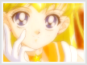
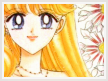

Entity » The Girl
» Compare & Contrast
This section focuses on a comparion between the Anime Minako and the Manga Minako. I admit that I started out liking the anime more than the manga, because I thought the manga looked a bit strange. But as time passes, I find myself noticing more and more how beautiful the manga actually is. So...without further ado, lets compare and contrast the two sides.
Anime
In the Anime, Minako is shown to be a happy-go-lucky, ditzy girl on the outside, with much troubled feelings on the inside. Much of her feelings are concealed from her friends, as Libras tend to do. Her loyalty isn't as obvious as it is shown in the manga. However she is still very gentle and caring, and would sacrifice anything to make her loved ones happy. She adores children in the anime and gets along with them well.
As duty bound as she was, the anime fails to exhibit how much being a senshi means to her. Her loyalty is only briefly seen in one episode where she realized that she missed being a normal teenager. She chose not to give up her duty as a senshi. Instead she spends much of her time at the arcade, or chasing idols and being silly. From time to time, she plays a little volleyball. Her best friend in Anime is Mako-chan, and they have a close friendship. Consequently, Sailor Venus is often paired up with Mako's alter-ego, Sailor Jupiter during battles.
Personal Opinions:
- It's mildly frustrating to see the occasional lack of loyalty and integrity exhibited by Minako/Sailor Venus in the anime. However she is still the cute, lively, and outgoing Minako we all know and love. She is much more of a care-free girl, albeit a bit insecure at times.
- Some shots of her are quite pretty, although the manga drawings are much more beautiful and elegant.
Manga
Minako/Sailor Venus from the manga is shown to be much more independent and mature. She was determined to prove her worthiness as a leader. She is very loyal and very focused on her duty as a senshi. The manga runs under the implication that she is the true leader of the inner senshi as well as the strongest one, while Usagi serves the role of the Moon Princess.
Possibly due to the fact that the manga depicts her as a mature, responsible and dedicated woman, the manga Minako-chan doesn't get along with little children as well as her anime version. She is less than thrilled with their games and often displays her aggrevation and impatience numerous times with small children; in particular, ChibiChibi and Chibiusa.
Minako-chan from the manga didn't have many secret and troublish feelings, exempting her temporary fear of self doubt, that she wasn't appropriate for a leader. From Dreams of Venus, an episode in the manga, it was revealed that she doubted her ability to be leader, particularly after the revelation that she wasn't the first one to get her powers. She secretly feared that others would doubt her potentials since they already had their powers. Consequently, she focused on achieving her dream of becoming an idol. She ends up with an attempt to save everyone and finally receives her power-up from Artemis as her doubts faded away. Her best friend in the manga is Rei-chan, and they share a very close relationship. Rei would often confide to Minako. As Sailor Venus, she is often paired up with Rei's alter-ego, Sailor Mars. Venus and Mars are generally considered the most powerful of the inner senshi in the manga.
In general, Sailor Venus is portrayed to be much more important than in the anime. In the manga, Sailor Venus was the one to kill Queen Beryl as well as Zoicite. She sacrificed her own safety for Sailor Moon's by pretending to be the moon princess. She is also often the last one to die, or close to being last.
Personal Opinions:
-The manga Minako is much more sophisticated, very loyal to her responsibility as a senshi, and more secure.
-The art is simply breathtaking and amazing. The colors blend in extremely well and show more obvious expressions.